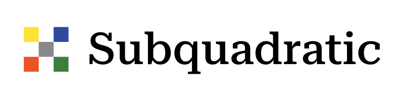

01 / 09

Subquadratic: Frontier AI Research Lab
~30 hours a week saved. +86% sprint velocity.
Partnered cross-functionally with AI researchers to architect and deploy a custom automated LLM benchmarking and evaluation scoreboard using Claude Code. Introduced agile development and product discovery best practices that unlocked two multimillion-dollar bridge rounds, and recovered ~100k hours of training data by fixing metadata and transcription defects in golden datasets.
Résumé highlights 5
- Partnered cross-functionally with AI researchers to architect and deploy a custom automated LLM benchmarking and evaluation scoreboard using Claude Code, accelerating internal validation workflows and saving ~30 hours of engineering and evaluation time per week.
- Unlocked two multimillion-dollar bridge rounds and increased sprint velocity by 86% through introducing agile development and product discovery best practices alongside OKR processes org-wide.
- Cut debugging time by an estimated 75% by writing an automated behavior-driven testing suite for the TTS API.
- Recovered ~100k hours of training data by identifying and fixing metadata and transcription defects in golden datasets.
- Generated 30 enterprise sales leads in 2 months via custom automated tracking dashboards on AWS Lambda.